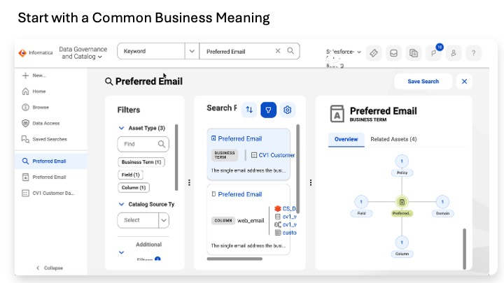
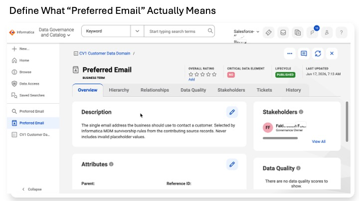
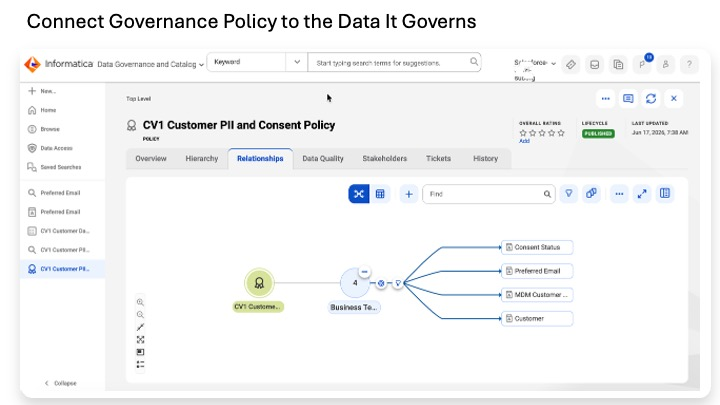

Lab 1
The workshop systems and sample data are already available. Before we inspect or change the data, we define the business vocabulary and governance context that will later be associated with the technical assets.
Create a small governance model in Cloud Data Governance and Catalog (CDGC) — Informatica’s service for documenting what data means, which policies apply, which systems hold it, and which business/data processes use it.
Define the vocabulary and governance context before we start changing the data.
| CDGC object | Purpose |
|---|---|
| Glossary Domain | Groups related business terms. |
| Business Term | Defines a business concept such as Preferred Email or MDM Customer ID. |
| Policy | Documents a governance rule and its owner. |
| System | Represents a governed data-bearing platform such as Salesforce or Databricks. |
| Process | Represents a governed business/data process such as Cleanse and Standardize. |
Lab 8 returns to this governance layer after the technical assets exist. It catalogs Salesforce and Databricks metadata, brings CDI integration metadata into the catalog, associates a real business term with technical fields, and inspects lineage.
| Item | Count | Workshop purpose |
|---|---|---|
| Glossary Domain | 1 | Container for customer vocabulary. |
| Business Terms | 7 | Common business meaning across systems. |
| Policy | 1 | Document the customer PII and consent rule. |
| Governed Systems | 4 | Represent Salesforce, Databricks, Informatica MDM, and Data 360. |
| Governed Processes | 5 | Describe the main data journey from profiling through activation. |
• IDMC service selector shows Data Governance and Catalog.
• You have authoring permission in CDGC.
• The workshop environment exists. No source connection is used by the hands-on steps in this lab.
Before creating anything, confirm where governance assets are managed and which object type you are creating. Menu names can vary slightly by release, but the object concepts remain the same.
1. Open IDMC → service selector → Data Governance and Catalog.
2. Locate the areas for Glossary, Policies, Systems, Processes, Catalog, and Marketplace. Exact navigation labels may vary by tenant.
| Concept | Meaning | Why it is not part of the core exercise |
|---|---|---|
| Stakeholders | People associated with a governance asset, such as Owner, Steward, Subject Matter Expert, or Approver. | The workshop has one author; production deployments assign real named stakeholders. |
| Critical Data Element (CDE) | A flag identifying especially important or regulated data. | Useful at scale, but not needed to demonstrate the core object model. |
| Data Marketplace | Internal experience where business users discover governed data products/datasets and request access. | The workshop has no multi-user access-request workflow to demonstrate. |
A Glossary Domain groups related business terms in the catalog. In this workshop, one domain contains the customer vocabulary.
3. Navigate to Glossary → New → Glossary Domain, or the equivalent path in your tenant.
4. Name = CV1 Customer Data Domain.
5. Description = Workshop scope. Holds vocabulary for the customer entity across Salesforce CRM, Databricks lakehouse, Informatica MDM, and Data 360. Created for the CV1 Data + AI Workshop.
6. Owner / Steward = yourself.
7. Save.
End-state check: CV1 Customer Data Domain is visible and its description is saved.
Different systems can use different technical field names for the same business concept. A business term gives that concept one governed definition that people can search and reuse.
Create each term under Parent = CV1 Customer Data Domain. Leave Reference ID blank so CDGC assigns it.
| Term | Definition |
|---|---|
| Customer | A real person who buys from the company. In this workshop, customer data begins in source systems, is mastered in Informatica MDM, and is activated in Salesforce Data 360. |
| MDM Customer ID | The persistent enterprise identifier assigned by Informatica MDM to a mastered customer. It is used downstream to anchor that trusted identity. |
| Preferred Email | The email address the business should use for the customer after validation and mastering. |
| Consent Status | The customer’s marketing-contact consent state. Workshop values: Opted In, Opted Out, Unknown. |
| Lifetime Value | The aggregate value of valid customer transactions, calculated for downstream customer analysis and segmentation. |
| Loyalty Tier | The customer’s loyalty-program tier: Gold, Silver, Bronze, or blank. |
| Unified Profile | The activation-ready customer representation in Salesforce Data 360, anchored on mastered identity and enriched with related engagement data. |
8. For each term: New → Business Term.
9. Enter Name and Description from the table.
10. Set Parent = CV1 Customer Data Domain.
11. Leave Reference ID blank and create/save.
Validation: open each term and confirm its Parent is CV1 Customer Data Domain and its description is present. Search for Customer and MDM to confirm the terms are discoverable.
A CDGC policy is the governed statement of a rule. It documents the rule and ownership; it does not execute the rule in the data path.
CDGC Policy documents: what rule should apply | v Operational systems enforce the rule where data is actually used
12. New → Business Impact → Policy → Create.
13. Name = CV1 Customer PII and Consent Policy.
14. Parent = leave blank.
15. Description = Governs the collection, processing, retention, and use of personally identifiable customer information — Email, Phone, Address — and customer consent state across all governed systems. Marketing activation is permitted only when Consent Status = Opted In.
16. Reference ID = leave blank.
17. Policy Type = Data Standards.
18. Owner / Steward = yourself.
19. Create.
20. Open the policy → Relationships → Add Relationships.
21. Select Customer, MDM Customer ID, Consent Status, and Preferred Email.
22. Continue to Assign Relationships.
23. Use the available Policy → Term relationship, shown as is Regulating in the tested tenant.
24. Finish.
In this workshop, Data 360 later applies the same consent intent in the activation segment. Nothing is automatically transmitted from the CDGC policy into Data 360.
A governed System represents a platform that holds or processes data. Registering the systems gives governance users a business-readable inventory even before technical assets are bound to them.
| System | Description |
|---|---|
| CV1 Salesforce CRM | Operational customer relationship management system. Source of customer identity attributes and consent state. Workshop object: CV1_Customer__c. |
| CV1 Databricks Lakehouse | Analytical lakehouse holding customer engagement events and transactions. Workshop schema: cv1_workshop_catalog.cv1_workshop. |
| CV1 Informatica MDM | Master data management system that resolves cross-source identity, applies survivorship, and produces the golden customer record with a persistent MDM Business ID. |
| CV1 Data 360 | Salesforce activation platform that receives mastered identity, relates it to engagement/transaction data, and produces Unified Individual, insights, segments, and Data Graph context. |
For each system: New → Business Data → Systems → Create; enter the Name and Description above, set Owner = yourself, and Create.
End-state check: all four governed systems are searchable in CDGC.
A governed Process describes a meaningful data or business activity. It lets the catalog explain not only what systems and fields exist, but what work those assets support.
In the tested tenant, Process is created under New → Business Impact → Process. Leave Parent, Reference ID, and Duration blank unless your tenant requires them. Set Process Type = Process. Step Type can be Starting for Profile Raw Data, Ending for Activate Profile, and Common for the middle processes.
| Process | Description |
|---|---|
| Profile Raw Data | Observe source-data condition without changing it. Inputs: Salesforce customer data and Databricks events/transactions. Output: statistical profile findings. |
| Cleanse and Standardize | Apply standardization and validation logic. Inputs: raw source data plus reference dictionaries. Outputs: per-source staging tables and exception tables. |
| Master Customer | Resolve records from different sources into trusted master identities using MDM match, merge, and survivorship. Output: golden record with persistent MDM Business ID and source traceability. |
| Publish Golden Record | Distribute or expose mastered identity to consuming systems using the publishing pattern appropriate to each consumer. For Data 360, the workshop uses direct API ingestion of the mastered profile. |
| Activate Profile | Combine mastered identity in Data 360 with Databricks engagement/transaction data to create Unified Individual, calculated insight, segment, and Data Graph context. |
Create all five processes and confirm they are searchable.
• CV1 Customer Data Domain exists.
• Seven business terms exist under the domain.
• CV1 Customer PII and Consent Policy exists and relates to the intended terms.
• Four governed systems are searchable.
• Five governed processes are searchable.
• No data was written to Salesforce or Databricks.

Preferred Email is defined as a governed business term rather than leaving every system to interpret its own field name. The search view shows that the same business concept can be related to different technical assets, giving business and technical teams a common vocabulary.

The business term provides the plain-language definition and ownership context for the data. At this stage we are defining meaning and governance, not changing data or implementing MDM survivorship; later labs build the technical controls that support the definition.

The CV1 Customer PII and Consent Policy is related to governed concepts including Customer, Preferred Email, Consent Status and MDM Customer ID. This documents which important customer-data concepts fall under the policy; operational systems and processes still enforce the actual controls.
We created the business vocabulary and governance context for the workshop before changing any source data. The catalog now has governed definitions for customer concepts, one policy, the systems involved, and the processes that describe the data journey.
We defined the vocabulary before we started changing the data.
Lab 2 moves from governance metadata to the source data itself. We profile Salesforce and Databricks to understand what is actually in the data before we define any custom validity rules.
Lab 8 later returns to CDGC after the technical assets exist. It discovers the Salesforce and Databricks assets, brings CDI metadata into the catalog, binds Preferred Email to real fields, and inspects lineage.
A business domain is a broad organizational subject area such as Sales, Service, Finance, or Risk. A Glossary Domain in CDGC is a catalog object used to group related business terms. In this lab, CV1 Customer Data Domain is the Glossary Domain.
The CDGC policy is the human-readable governed statement of the rule and its owner. Operational platforms enforce the rule. For example, the Data 360 activation segment can require marketing consent before including a customer. CDGC documents the intent; Data 360 executes the segment logic.
In a production implementation, the same policy can also be associated with data-quality evidence, access controls, masking, API rules, and audit evidence. The policy still remains the governing statement rather than the runtime enforcement engine.
• Production glossaries contain many more terms, named stewards, review dates, and term relationships.
• Critical Data Elements identify the subset of data that requires additional governance attention.
• Registered processes can be connected to orchestration/run metadata for impact analysis.
• Data Marketplace becomes useful when many internal users need to discover governed data and request access.
Trusted Data Foundation Workshop